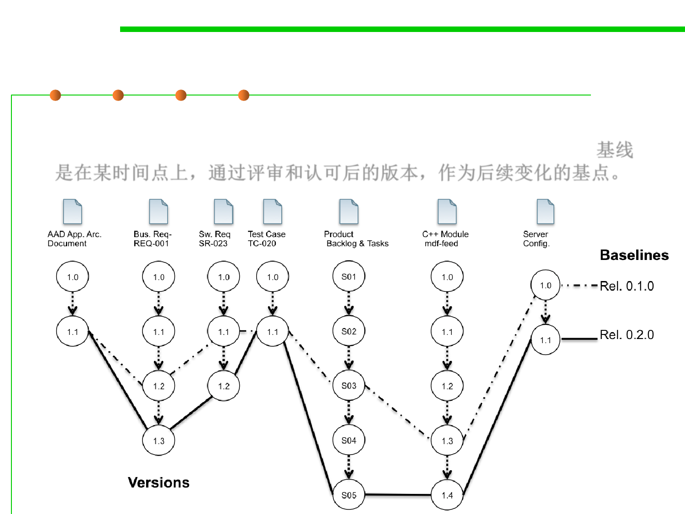

2.1 Software Lifecycle and Configuration Management
Configuration Items (SCI) and Baselines
▪ A baseline is an agreed description of the attributes of a product,
at a point in time, which serves as a basis for defining change. 基线
是在某时间点上，通过评审和认可后的版本，作为后续变化的基点。